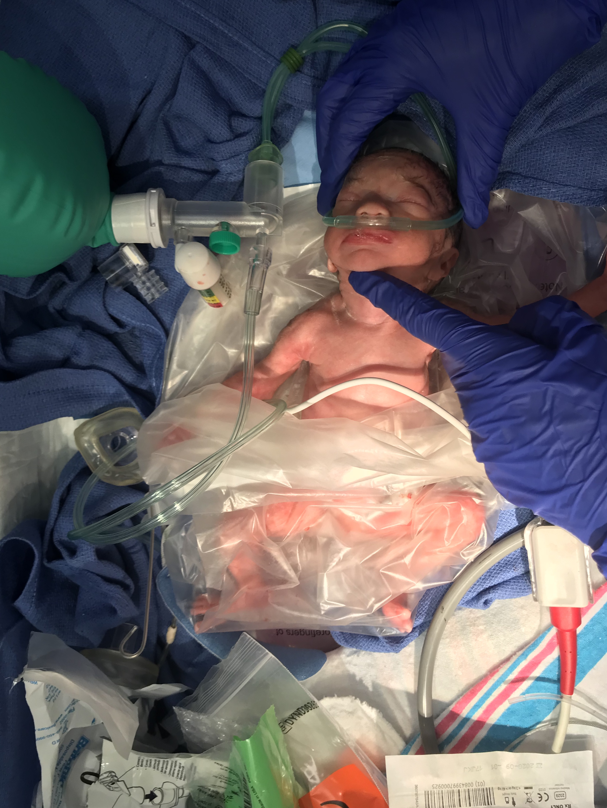
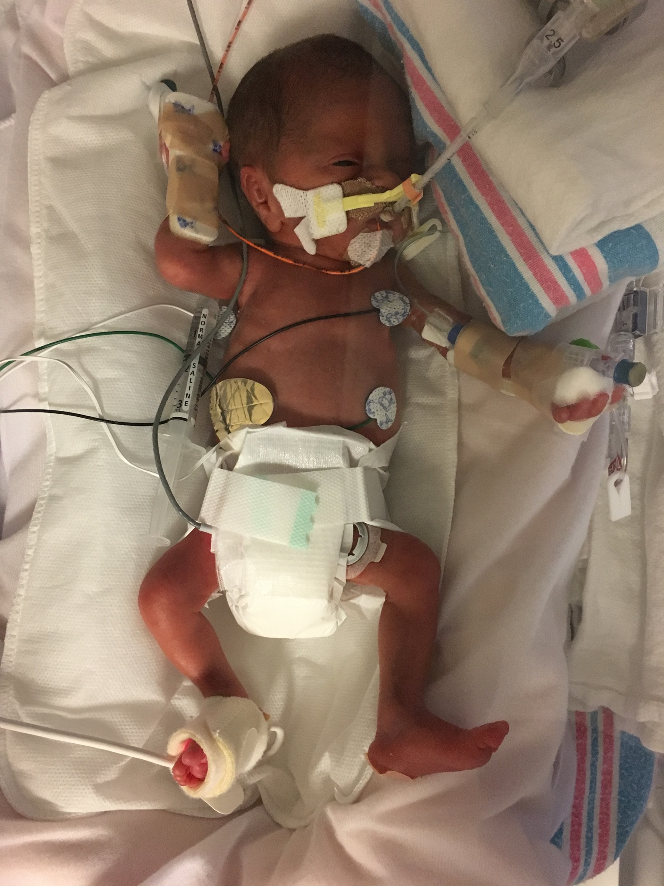
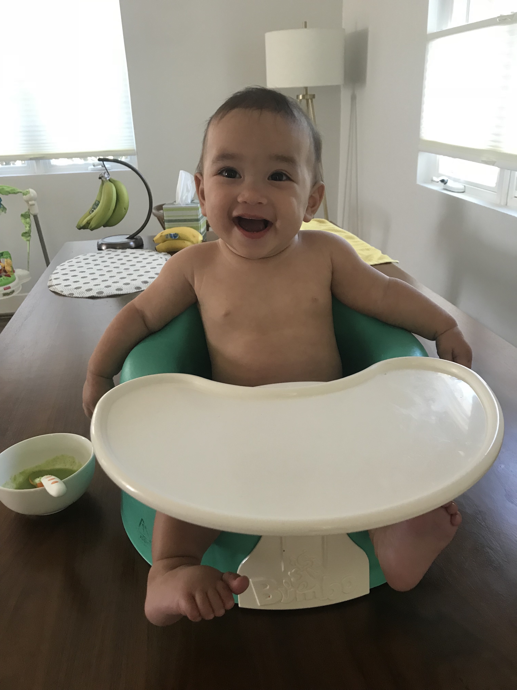

The first thing you learn as a parent is that the kids set the family agenda. Our girls took over early. Zara, and her twin Luna, came wiggling into this world the afternoon of January 9th, 2018 three months before their expected due date.
Full term is 39 weeks. Twin moms generally give birth at 35 weeks, so while we were expecting early arrivals, little could have prepared us for our girls to say hello world at 27 weeks, each weighing in just under 2lbs:
|
 |
 |
The first thing expecting parents listen for is their newborn’s cry. After a long wait, from behind the operating curtain, we heard Luna cry ever so briefly after delivery. We never heard from Zara. Both babies had Apgar scores close to 0, and had to be intubated immediately. While Luna only had the breathing tube for 24 hours, Zara cycled through different ventilators for nearly six weeks. One of them—the oscillator—pulsed oxygen-enhanced microbreathes 500 times a second to help her still developing lungs get her the air she needed. Because their caretakers had to carefully position the oscillator, we were only able to touch Zara through her incubator. The first time we held her was six weeks after she was born. Between the two of them they had over a hundred blood draws, half a dozen blood transfusions, brain bleeds, a collapsed lung, slowly closing holes in their hearts, and generally a really tough start in life.
Fast forward nine months—our little ladies just recently celebrated their first Halloween as baby sharks (doo do doo do do) and first birthdays. And while our days post the hospital were filled with appointments and normal newborn problems (sleeplessness, sickness, and spit up), in general our twins emerged unscathed. You would have never known that they spent their first three months on life support:
|
 |
Luna and Zara beat the odds, and we believe the care they received at the hospital as well as the time we were able to spend with them are the primary reasons they are thriving.
The attendings, nurses, and respiratory therapists at Good Samaritan hospital near DTLA became our second family those three months we spent with our newborns in the NICU. They helped our family through every development milestone, from breathing unassisted to nursing from mom. The hospital also allows parents with children in the NICU to “room-in” free of charge so that they can spend more time with their newborns. For mothers of multiples, parents who live far away, or any new parent, a place to spend the night / rest privately was a true blessing. It allowed us to spend more quality time with Luna and Zara when we were emotionally and physically exhausted.
We were fortunate not only to have amazing medical staff but also understanding employers and colleagues. Netflix, where I work, has a generous full-pay parental leave policy, which allowed me to be with our girls both when they were in the hospital as well as for over half a year once they came home. With twins it’s all hands on deck. In the hospital twins are separated on opposite sides of the NICU to to reduce the potential for medical errors. Having both parents present meant we could spend more quality time with our girls.
It’s a shame that the vast majority of US working parents are not able to spend much time with their new arrivals. While some states have enacted paid parental leave programs, the US has not enacted a national program that would extend to all parents. We’re one of the few developed countries in the world that doesn’t have a comprehensive paid leave program. While companies and states are improving their paid leave programs, spending time with your newborns shouldn’t be based on where you live or where you work.
We’re convinced that the extra parental care that Luna and Zara received helped them thrive. Studies show that infants in the NICU who spend time with their parents gain weight faster than infants who don’t. Babies recognize and respond to their parents voices in the womb prior to birth, and being soothed by ours helped them cope with the constant barrage of medical testing. Despite being two of the sickest babies in the hospital, our caretakers told us they were also some of the most calm, and we’d like to think that because they knew their parents were near.